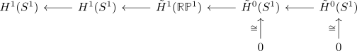
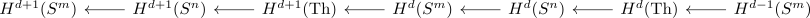

euler class of a spherical fibration of three spheres
Proposition
Let
be a fiber sequence in Anima with $n > 0$ (excluding the pathological $S^{-1} \rightarrow S^{-1} \rightarrow S^0$ which may or may not be a such a fiber sequence depending on the definitions one chooses)
Then the euler class is given by
Proof
follows from the isomorphisms in
$n = 1$
Then
is not orientable, since its cofiber is given by $\mathrm{RP}^1$ and $H_{1}(\mathbb{R}\mathbb{P}^1,\mathbb{Z}) = \mathbb{F}_2$ (cf. integral homology of an non orientable spherical fibration)
Nonetheless - suppressing $\mathbb{F}_2$ coefficients - we get the long exact sequence of a pair of singular cohomology

where the reduced cohomology is trivial.
Thus in particular $\tilde{H}^1(\mathbb{R}\mathbb{P}^1, \mathbb{F}_2) \rightarrow H^1(S^1,\mathbb{F}_2)$ is an isomorphism, hence in particular the euler class as pullback of the nontrivial thom class is itself nontrivial.
Alternatively argue geometrically, that the map $H^1(S^1) \rightarrow H^1(S^1)$ is given by multiplication with $2$ (using some homotopy group ~> hruewicz ~> uct argument)
$n > 2$
we have a long exact sequence of cohomology

Here $d=n-1, m = 2n-1 = d + n > d > 0$ which shows that $H^{d}(S^m) = 0$. Thus the map $H^{d+1}(\mathrm{Th}) \hookrightarrow H^{d+1}(S^n)$ has to be injective and by long exact sequence of zeros and integers the map
has to be an isomorphism, showing that the pullback of the thom class - which itself is $\pm 1$ - is $\pm 1$.